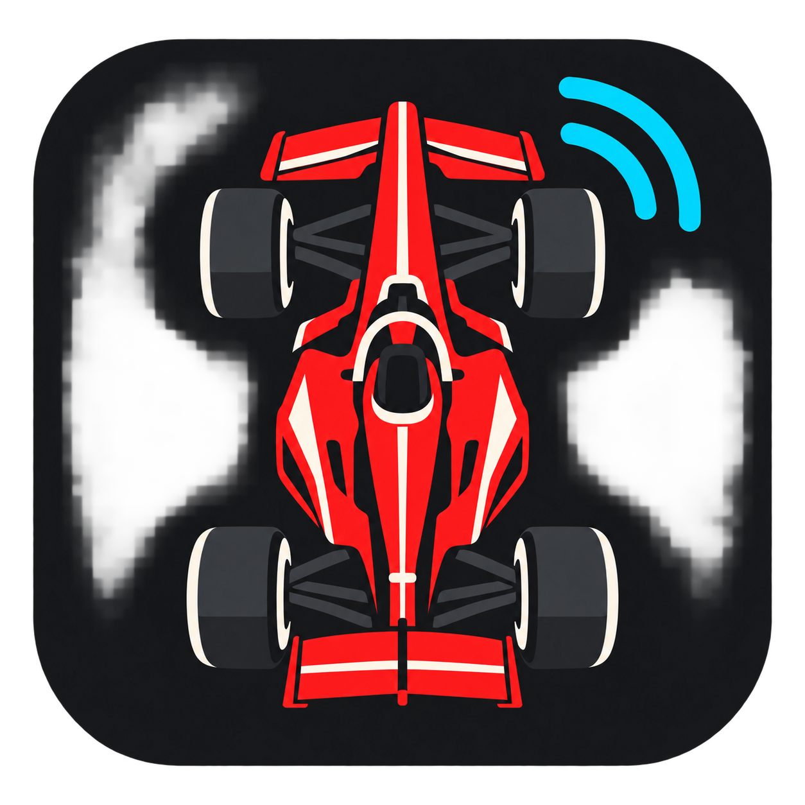

01 / CAPTURE
选中的区域，看得见
八个拖拽手柄、坐标与尺寸标签，支持移动、调整和键盘微调。缩略图每 10 秒刷新，点击可放大查看；选区自动保存，也能随时清除。

F1 RADIO TRANSLATOR为 MultiViewer 观赛打造的独立翻译小窗。框选英文转录，在本机识别新句子，将原文与中文放在一起，让车手反馈、车队指令与策略沟通更容易理解。
从选区到译文，让常用操作触手可及。你决定看哪里、用什么服务，以及窗口如何显示。
八个拖拽手柄、坐标与尺寸标签，支持移动、调整和键盘微调。缩略图每 10 秒刷新，点击可放大查看；选区自动保存，也能随时清除。
中文与英文逐条对照，识别到的姓名作为本地标签显示。手动切换简洁模式，让观赛小窗只留下阅读内容。
支持 MyMemory、DeepL 和 OpenAI 兼容接口。为支持的接口提供 F1 语境；GPT 选项使用 gpt-6-luna，上游须支持对应模型或别名。
暂停后继续，结束后重新开始。托盘菜单可恢复窗口、控制翻译和退出；点窗口 X 会退出应用并清理工作进程。
本机记住选区、服务与地址。密钥可选择用 Windows 当前用户加密保存，并提供显示/隐藏开关，方便检查输入。
原生 WPF 深色界面、细滚动条与手动简洁模式。常驻 OCR、画面检测、去重和请求队列减少重复处理，保留最近 120 条结果。
在 MultiViewer 中打开 AI Radio Transcriptions，确保英文字幕清晰可见。
将卡片正文和姓名行一起框入，通过缩略图或放大预览检查范围。
填写服务所需的密钥和上游地址，点击开始；英文原文与中文译文随后更新。
屏幕截图与 OCR 在本机完成。应用发送给所选翻译服务的是识别后的字幕正文；说话人标签不附加到翻译请求。密钥和选区不随开源源码发布。
阅读隐私说明 ↗查看源码，按说明运行或构建自己的 Windows EXE。
本工具识别屏幕转录，不直接识别音频。OCR、原始转录与机器翻译均可能有误差；更新延迟受识别、网络及接口影响。翻译服务费用与额度由所选服务决定。本项目与 F1、MultiViewer 及翻译服务商无官方关联。